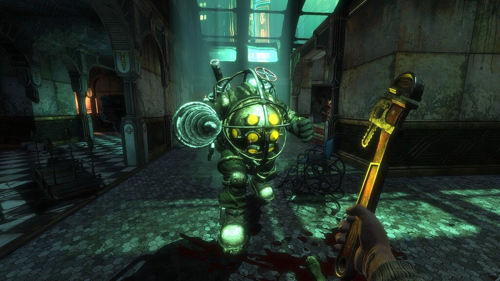
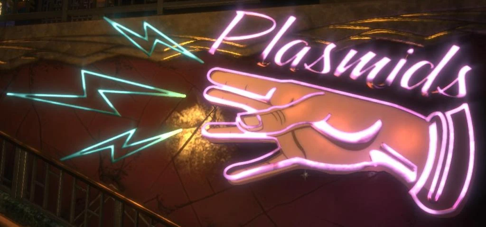

¿Cuando salio?
Fue lanzado el 21 de agosto de 2007 en Norteamérica y el 24 de agosto en Europa y Australia, con una edición normal y una edición limitada.
¿De que trata?
Mientras explora la ciudad de Rapture en el fondo del océano Atlántico, el personaje protagonista, Jack, se verá obligado a luchar contra seres humanos mutados debido a la adicción a una sustancia genética llamada ADAM.
La filosofía, arquitectura y sociedad están basadas en la ideología del magnate Andrew Ryan, fundador de Rapture y propietario de Ryan Industries, personaje que a su vez está fuertemente inspirado en los trabajos de Ayn Rand. Modo de juego
BioShock es un FPS con matices de RPG (los elementos de personalización del juego). La salud/maná de las funciones del sistema son similares a System Shock 2, título al que BioShock sirve como "sucesor espiritual" según han descrito sus desarrolladores. La salud y el EVE se pueden reponer con botiquines de primeros auxilios y jeringas de EVE, de los cuales Jack puede llevar una cantidad limitada. Los métodos alternativos de reposición son el uso de estaciones portátiles de salud y consumibles repartidos por toda la ciudad. Las principales monedas usadas en el juego son tanto el ADAM como los dólares de Rapture. El ADAM se utiliza para comprar mejoras genéticas en los Jardines de las Recolectoras, mientras que los fondos monetarios se gastan en las máquinas expendedoras para diversas adquisiciones.
